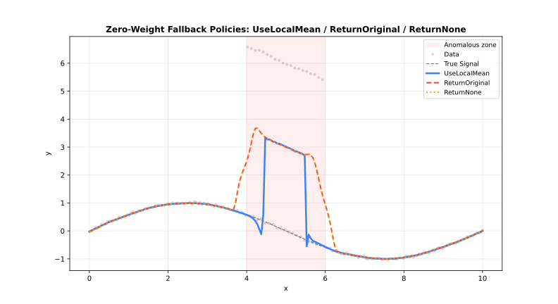

Parameters
Complete reference for all LOWESS configuration options.
Quick Reference
| Parameter | Default | Range/Options | Description | Adapter |
|---|---|---|---|---|
| fraction | 0.67 | (0, 1] | Smoothing span | All |
| iterations | 3 | [0, 1000] | Robustness iterations | All |
| delta | nothing | [0, ∞) | Interpolation threshold | All |
| weight_function | "tricube" | 7 options | Distance kernel | All |
| robustness_method | "bisquare" | 3 options | Outlier weighting | All |
| zeroweightfallback | "use_local_mean" | 3 options | Zero-weight behavior | All |
| boundary_policy | "extend" | 4 options | Edge handling | All |
| scaling_method | "mad" | 3 options | Scale estimation | All |
| auto_converge | nothing | tolerance | Early stopping | All |
| return_residuals | false | logical | Include residuals | All |
| returnrobustnessweights | false | logical | Include weights | All |
| return_se | false | logical | Return standard errors | All |
| return_diagnostics | false | logical | Include metrics | Batch, Streaming |
| custom_weights | nothing | positive | Per-observation weights | Batch |
| confidence_intervals | nothing | (0, 1) | CI level | Batch |
| prediction_intervals | nothing | (0, 1) | PI level | Batch |
| cv_method | nothing | method | Auto-select fraction | Batch |
| chunk_size | 5000 | [10, ∞) | Points per chunk | Streaming |
| overlap | 500 | [0, chunk) | Overlap between chunks | Streaming |
| merge_strategy | "weighted_average" | 4 options | Merge overlaps | Streaming |
| window_capacity | 1000 | [3, ∞) | Max window size | Online |
| min_points | 2 | [2, window] | Min before output | Online |
| update_mode | "incremental" | 2 options | Update strategy | Online |
In Rust, pass option-like parameters as strings (case-insensitive), e.g. "tricube", "bisquare", "extend", "average".
Parameter Options Summary
| Parameter | Available Options |
|---|---|
| weight_function | "tricube", "epanechnikov", "gaussian", "biweight", "cosine", "triangle", "uniform" |
| robustness_method | "bisquare", "huber", "talwar" |
| zeroweightfallback | "use_local_mean", "return_original", "return_none" |
| boundary_policy | "extend", "reflect", "zero", "noboundary" |
| scaling_method | "mad", "mar", "mean" |
| merge_strategy | "average", "weighted_average", "take_first", "take_last" |
| update_mode | "incremental", "full" |
Core Parameters
fraction
The proportion of data used for each local fit. Most important parameter.
| Value | Effect | Use Case |
|---|---|---|
| 0.1–0.3 | Fine detail | Rapidly changing signals |
| 0.3–0.5 | Balanced | General purpose |
| 0.5–0.7 | Heavy smoothing | Noisy data |
| 0.7–1.0 | Very smooth | Trend extraction |
using FastLOWESS
using Random, Statistics
rng = MersenneTwister(42)
x = collect(range(0, 2π, length=100))
y = sin.(x) .+ randn(rng, 100) .* 0.3
model = Lowess(; fraction=0.3)
result = fit(model, x, y)
println("First smoothed value (fraction=0.3): ", result.y[1])First smoothed value (fraction=0.3): 0.35559622300114896iterations
Number of robustness iterations for outlier resistance.
| Value | Effect | Performance |
|---|---|---|
| 0 | No robustness | Fastest |
| 1–3 | Moderate | Recommended |
| 4–6 | Strong | Contaminated data |
| 7+ | Very strong | Heavy outliers |
using FastLOWESS
using Random, Statistics
rng = MersenneTwister(42)
x = collect(range(0, 2π, length=100))
y = sin.(x) .+ randn(rng, 100) .* 0.3
model = Lowess(; iterations=5)
result = fit(model, x, y)
println("First smoothed value (iterations=5): ", result.y[1])First smoothed value (iterations=5): 0.41060637700167074delta
Interpolation optimization threshold. Points within delta distance reuse the previous fit.
- Default: 1% of x-range (Batch), 0.0 (Streaming/Online)
- Effect: Higher values = faster but less accurate
using FastLOWESS
using Random, Statistics
rng = MersenneTwister(42)
x = collect(range(0, 2π, length=100))
y = sin.(x) .+ randn(rng, 100) .* 0.3
model = Lowess(; delta=0.05)
result = fit(model, x, y)
println("First smoothed value (delta=0.05): ", result.y[1])First smoothed value (delta=0.05): 0.4153235846410312weight_function
Distance weighting kernel for local fits.
| Kernel | Efficiency | Smoothness |
|---|---|---|
"tricube" | 0.998 | Very smooth |
"epanechnikov" | 1.000 | Smooth |
"gaussian" | 0.961 | Infinite |
"biweight" | 0.995 | Very smooth |
"cosine" | 0.999 | Smooth |
"triangle" | 0.989 | Moderate |
"uniform" | 0.943 | None |
See Weight Functions for detailed comparison.
using FastLOWESS
using Random, Statistics
rng = MersenneTwister(42)
x = collect(range(0, 2π, length=100))
y = sin.(x) .+ randn(rng, 100) .* 0.3
model = Lowess(; weight_function="epanechnikov")
result = fit(model, x, y)
println("First smoothed value (epanechnikov kernel): ", result.y[1])First smoothed value (epanechnikov kernel): 0.42362028879902robustness_method
Method for downweighting outliers during iterative refinement.
| Method | Behavior | Use Case |
|---|---|---|
"bisquare" | Smooth downweighting | General-purpose |
"huber" | Linear beyond threshold | Moderate outliers |
"talwar" | Hard threshold (0 or 1) | Extreme contamination |
See Robustness for detailed comparison.
using FastLOWESS
using Random, Statistics
rng = MersenneTwister(42)
x = collect(range(0, 2π, length=100))
y = sin.(x) .+ randn(rng, 100) .* 0.3
model = Lowess(; robustness_method="talwar")
result = fit(model, x, y)
println("First smoothed value (talwar robustness): ", result.y[1])First smoothed value (talwar robustness): 0.3695930967351355boundary_policy
Edge handling strategy to reduce boundary bias. See Boundary Handling for a detailed comparison.

| Policy | Behavior | Use Case |
|---|---|---|
"extend" | Pad with first/last values | Most cases (default) |
"reflect" | Mirror data at boundaries | Periodic/symmetric data |
"zero" | Pad with zeros | Data approaches zero |
"noboundary" | No padding | Original Cleveland behavior |
For example:
using FastLOWESS
using Random, Statistics
rng = MersenneTwister(42)
x = collect(range(0, 2π, length=100))
y = sin.(x) .+ randn(rng, 100) .* 0.3
model = Lowess(; boundary_policy="reflect")
result = fit(model, x, y)
println("First smoothed value (reflect boundary): ", result.y[1])First smoothed value (reflect boundary): 0.5306054842946474scaling_method
Method for estimating residual scale during robustness iterations. See Scaling Methods for a detailed comparison.

| Method | Description | Robustness |
|---|---|---|
"mad" | Median Absolute Deviation | Very robust |
"mar" | Median Absolute Residual | Robust |
"mean" | Mean Absolute Residual | Less robust |
For example:
using FastLOWESS
using Random, Statistics
rng = MersenneTwister(42)
x = collect(range(0, 2π, length=100))
y = sin.(x) .+ randn(rng, 100) .* 0.3
model = Lowess(; scaling_method="mad")
result = fit(model, x, y)
println("First smoothed value (MAD scaling): ", result.y[1])First smoothed value (MAD scaling): 0.4153235846410312zeroweightfallback
Behavior when all neighborhood weights are zero.

| Option | Behavior |
|---|---|
"use_local_mean" | Use mean of neighborhood (default) |
"return_original" | Return original y value |
"return_none" | Return NaN |
For example:
using FastLOWESS
using Random, Statistics
rng = MersenneTwister(42)
x = collect(range(0, 2π, length=100))
y = sin.(x) .+ randn(rng, 100) .* 0.3
model = Lowess(; zero_weight_fallback="use_local_mean")
result = fit(model, x, y)
println("First smoothed value (use_local_mean fallback): ", result.y[1])First smoothed value (use_local_mean fallback): 0.4153235846410312auto_converge
Enable early stopping when robustness weights stabilize.
using FastLOWESS
using Random, Statistics
rng = MersenneTwister(42)
x = collect(range(0, 2π, length=100))
y = sin.(x) .+ randn(rng, 100) .* 0.3
model = Lowess(; iterations=20, auto_converge=1e-6)
result = fit(model, x, y)
println("First smoothed value (auto_converge=1e-6): ", result.y[1])First smoothed value (auto_converge=1e-6): 0.39859766262762303custom_weights
Per-observation weights applied before distance and robustness weighting. Only available in the Batch adapter.
See Custom Weights for a full discussion.
using FastLOWESS
using Random, Statistics
rng = MersenneTwister(42)
x = collect(range(0, 2π, length=100))
y = sin.(x) .+ randn(rng, 100) .* 0.3
weights = ones(length(x))
weights[6] = 0.0 # exclude index 6 (1-indexed)
model = Lowess(fraction = 0.5)
result = fit(model, x, y; custom_weights = weights)
println("First smoothed value (custom weights, index 6 excluded): ", result.y[1])First smoothed value (custom weights, index 6 excluded): 0.39590893799186894Output Options
return_residuals
Include residuals (y - smoothed) in the output.
using FastLOWESS
using Random, Statistics
rng = MersenneTwister(42)
x = collect(range(0, 2π, length=100))
y = sin.(x) .+ randn(rng, 100) .* 0.3
model = Lowess(; return_residuals=true)
result = fit(model, x, y)
println("Residuals: ", result.residuals)Residuals: [-0.05223897802632016, -0.38237183909344824, -0.18180013246290805, -0.16115418708294638, -0.214911922572825, 0.04110405470795542, 0.2118399034293027, -0.06159407094249747, -0.17091941725645665, -0.21377143685002203, 0.021201546503559543, -0.13253884198140964, 0.29228151291722626, -0.1992042581898848, 0.28120955853411955, 0.18255867181606755, -0.24536729833158466, 0.2671449615734901, -0.06661767597094637, -0.019674327067928155, 0.8040557472790036, 0.5726879931194581, 0.6864412446556776, 0.9514592673572511, 0.8432760992136943, 0.553651255756573, 0.12948319028754718, 0.24965393444172335, 1.0185538206161353, 0.22518576588146155, 0.47685333157938037, 0.435697118258365, 0.346688221497365, 0.8832671890787345, 0.5336334120504893, 0.3656225866238234, 0.29792366184336383, 0.48445805850705903, 0.13835456398885482, 0.3784721990867951, -0.8121284911572837, -0.05868173316007386, -0.10698248147311762, 0.4140667860275751, 0.02950842091441841, 0.4200429849040974, 0.19360000449626458, -0.15510237534096166, 0.3542571673656453, -0.03522128934653104, 0.44620499046671025, -0.34370911545009725, -0.676376258976142, -0.14316174214829985, 0.17731510131981493, -0.11348553305521589, -0.3318476653248814, -0.2603927237404933, -0.09585633228574636, -0.7648091953769671, -0.2754510635322655, -0.4376315087558874, 0.30996497697721015, -0.20611425118986526, -0.0017982280172707532, -0.8799534099802304, -0.32863131377081833, -1.3248967213946186, -0.6314400768405188, -0.7204574915888382, -0.08317549100554922, 0.1210472679075203, -0.45243118849769987, -0.06402934328765086, -0.3318233922982644, -0.34441015745473186, -0.021589183006392232, -0.41591855802925015, -0.5840899126091499, -0.6129110120617252, -0.16182191716613237, -0.6021161478677248, -0.5136623194681365, -0.5532954466042554, -0.14114573367934236, 0.058135919324017904, -0.04939228527321071, -0.5601445074212495, 0.16281242609589314, -0.639015595903911, -0.37306000927262806, 0.026739246685200502, -0.30856104625387304, -0.04757680154608285, -0.15442345251282097, 0.22031056932092932, 0.706623607804577, 0.1659017431188593, 0.5120492817237641, 0.1256852324261883]return_diagnostics
Include fit quality metrics (Batch and Streaming only).
| Metric | Description |
|---|---|
rmse | Root Mean Square Error |
mae | Mean Absolute Error |
r_squared | R² coefficient |
residual_sd | Residual standard deviation |
effective_df | Effective degrees of freedom |
aic | Akaike Information Criterion |
aicc | Corrected AIC |
using FastLOWESS
using Random, Statistics
rng = MersenneTwister(42)
x = collect(range(0, 2π, length=100))
y = sin.(x) .+ randn(rng, 100) .* 0.3
model = Lowess(; return_diagnostics=true)
result = fit(model, x, y)
println("R²: ", result.diagnostics.r_squared)R²: 0.6732165229973108returnrobustnessweights
Include final robustness weights (useful for outlier detection).
using FastLOWESS
using Random, Statistics
rng = MersenneTwister(42)
x = collect(range(0, 2π, length=100))
y = sin.(x) .+ randn(rng, 100) .* 0.3
model = Lowess(; iterations=3, return_robustness_weights=true)
result = fit(model, x, y)
# Points with result.robustness_weights < 0.5 are likely outliers
println("First smoothed value (robustness weights computed): ", result.y[1])First smoothed value (robustness weights computed): 0.4153235846410312return_se
Return per-point standard errors for the smoothed fit. Standard errors measure the uncertainty of each smoothed estimate and are used as the basis for confidence and prediction intervals when those are requested alongside return_se.
using FastLOWESS
using Random, Statistics
rng = MersenneTwister(42)
x = collect(range(0, 2π, length=100))
y = sin.(x) .+ randn(rng, 100) .* 0.3
model = Lowess(; return_se=true)
result = fit(model, x, y)
println("Standard errors: ", result.standard_errors)Standard errors: [0.02203521776299996, 0.01501906945277849, 0.021954161231855243, 0.02321914351251011, 0.02287346490161692, 0.02684221125154006, 0.0254033755065893, 0.028870133147821088, 0.02815413171576235, 0.02808378444635696, 0.03317099883070882, 0.03292262704674001, 0.02955773755005545, 0.03361705484476325, 0.03254977770349426, 0.03780083172717923, 0.03536698589224322, 0.03699611484704327, 0.043962328030568, 0.04583995963062599, 0.0, 0.01431991873862936, 0.0, 0.0, 0.0, 0.018458769101895478, 0.05203883331490622, 0.047824484109581365, 0.0, 0.050344528643148534, 0.029570363181700803, 0.03444575797721043, 0.04329191288417018, 0.0, 0.022872943464242353, 0.04214980419891732, 0.04787348820827569, 0.029091556943205556, 0.05653130301103537, 0.04062333832710134, 0.0, 0.057801817685983914, 0.056492821919996924, 0.035677108003004436, 0.05759258999396098, 0.03421045626922869, 0.05199908411297777, 0.053399393816242216, 0.039593193633001074, 0.05540465199060365, 0.02932973957899501, 0.040255400213305224, 0.0, 0.05165967825246385, 0.04944254696069567, 0.052117480511516275, 0.040574621112622014, 0.04550884663945951, 0.05210500247733721, 0.0, 0.0445843464718331, 0.03130318883173264, 0.03969165611551848, 0.04868250403644311, 0.052913419255133896, 0.0, 0.041852068048968585, 0.0, 0.008565187136435507, 0.0, 0.05287935184023465, 0.05032804862233434, 0.031343647782909316, 0.052598092409321964, 0.041559112365715606, 0.040319399441323664, 0.05146221858548655, 0.03363436849470877, 0.014965190007449067, 0.010966479636048744, 0.04672978950664911, 0.011806613298709861, 0.021549192497777907, 0.016783613417880712, 0.04338277771676702, 0.04284898273807347, 0.04234458907945141, 0.014046661515140996, 0.03676290357220673, 0.004914202370407854, 0.026878749845481945, 0.03610269810758115, 0.0283626556656801, 0.03381084038258958, 0.031283848384474545, 0.02739152714286591, 0.0, 0.026927744038846037, 0.010110454147768178, 0.0256524416219615]confidenceintervals / predictionintervals
Request uncertainty estimates (Batch only).
See Intervals for detailed usage.
using FastLOWESS
using Random, Statistics
rng = MersenneTwister(42)
x = collect(range(0, 2π, length=100))
y = sin.(x) .+ randn(rng, 100) .* 0.3
model = Lowess(; confidence_intervals=0.95, prediction_intervals=0.95)
result = fit(model, x, y)
println("First smoothed value (95% CI + PI): ", result.y[1])First smoothed value (95% CI + PI): 0.4153235846410312CV Methods
cv_method
Selection strategy for automated parameter tuning.
| Method | Description | Speed |
|---|---|---|
"kfold" | K-Fold Cross-Validation | Fast |
"loocv" | Leave-One-Out Cross-Validation | Slow |
using FastLOWESS
using Random, Statistics
rng = MersenneTwister(42)
x = collect(range(0, 2π, length=100))
y = sin.(x) .+ randn(rng, 100) .* 0.3
model = Lowess(; cv_method="kfold", cv_k=5)
result = fit(model, x, y)
println("First smoothed value (k-fold CV, k=5): ", result.y[1])First smoothed value (k-fold CV, k=5): 0.4153235846410312Adapter Parameters
chunk_size
Points per chunk in Streaming mode.
using FastLOWESS
using Random, Statistics
rng = MersenneTwister(42)
x = collect(range(0, 2π, length=100))
y = sin.(x) .+ randn(rng, 100) .* 0.3
model = StreamingLowess(; chunk_size=10000)
process_chunk(model, x, y)
result = finalize(model)
println("First smoothed value (chunk_size=10000): ", result.y[1])First smoothed value (chunk_size=10000): 0.4153235846410312overlap
Overlap between chunks in Streaming mode.
using FastLOWESS
using Random, Statistics
rng = MersenneTwister(42)
x = collect(range(0, 2π, length=100))
y = sin.(x) .+ randn(rng, 100) .* 0.3
model = StreamingLowess(; overlap=1000)
process_chunk(model, x, y)
result = finalize(model)
println("First smoothed value (overlap=1000): ", result.y[1])First smoothed value (overlap=1000): 0.4153235846410312merge_strategy
Method for merging overlapping chunks. See Merge Strategies for a detailed comparison.
| Strategy | Description | Robustness |
|---|---|---|
"average" | Average of overlapping chunks | Faster, less accurate |
"take_first" | Use value from first chunk | Fastest, least accurate |
"take_last" | Use value from last chunk | Fastest, least accurate |
"weighted_average" | Weighted average of overlapping chunks | Most accurate |
For example:
using FastLOWESS
using Random, Statistics
rng = MersenneTwister(42)
x = collect(range(0, 2π, length=100))
y = sin.(x) .+ randn(rng, 100) .* 0.3
model = StreamingLowess(; merge_strategy="weighted_average")
process_chunk(model, x, y)
result = finalize(model)
println("First smoothed value (weighted_average merge): ", result.y[1])First smoothed value (weighted_average merge): 0.4153235846410312window_capacity
Maximum points held in memory for Online mode.
using FastLOWESS
using Random, Statistics
rng = MersenneTwister(42)
x = collect(range(0, 2π, length=100))
y = sin.(x) .+ randn(rng, 100) .* 0.3
model = OnlineLowess(; window_capacity=500)
result = add_point(model, x[1], y[1]) # nothing until window fills
println("Result before window fills (capacity=500): ", result)Result before window fills (capacity=500): nothingmin_points
Minimum points required before Online filter starts producing outputs.
using FastLOWESS
using Random, Statistics
rng = MersenneTwister(42)
x = collect(range(0, 2π, length=100))
y = sin.(x) .+ randn(rng, 100) .* 0.3
model = OnlineLowess(; min_points=10)
result = add_point(model, x[1], y[1])
println("Result before min_points reached (min_points=10): ", result)Result before min_points reached (min_points=10): nothingupdate_mode
Optimization strategy for Online mode updates.
| Mode | Description | Speed |
|---|---|---|
"full" | Full update | Slow |
"incremental" | Incremental update | Fast |
For example:
using FastLOWESS
using Random, Statistics
rng = MersenneTwister(42)
x = collect(range(0, 2π, length=100))
y = sin.(x) .+ randn(rng, 100) .* 0.3
model = OnlineLowess(; update_mode="full")
result = add_point(model, x[1], y[1])
println("Result after first point (update_mode=full): ", result)Result after first point (update_mode=full): nothing